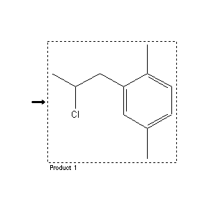

|  |
| FA | RX(1); FLST(1); RX(1) |
Reaction (1 of 1)
| Reaction ID | 7277268 |
| Product BRN | 2084011 |
| Product | 1-(p-Xyly)-2-chlorpropan |
| No. of Reaction Details | 1 |
Reaction Details (1 of 1)
| Reaction Classification | Preparation (half reaction) |
| Citation Pointer | 4109508; Patent; Magerramov et al.; SU 249356; 1969; RZKHAR; Ref.Zh.Khim.; RU; 14; N172P; 1970;4489893; Patent; Magerramov et al.; SU 311885; 1971; RZKHAR; Ref.Zh.Khim.; RU; 9; N91P; 1972;4495414; Journal; Magerramov et al.; DAZRA7; Dokl.Akad.Nauk Az.SSR; 24; 1968; 33; Chem.Abstr.; 70; 28507q; 1969;4571776; Journal; Magerramow et al.; AZKZAU; Azerb.Khim.Zh.; 3; 1972; 71,73; Chem.Abstr.; 79; 52896; 1973;4571781; Journal; Farchadowa et al.; AZKZAU; Azerb.Khim.Zh.; 4; 1972; 65; Chem.Abstr.; 79; 52900; 1973;4590932; Journal; Marei et al.; JUA |
Reference (1 of 6)
| Citation Number | 4109508 |
| Document Type | Patent |
| Patent Author | Magerramov et al. |
| Patent Number | SU 249356 |
| Patent Year | 1969 |
| CODEN | RZKHAR |
| Journal Title | Ref.Zh.Khim. |
| Language Code | RU |
| (Series) Volume | 14 |
| Number | N172P |
| Publication Year | 1970 |
Reference (2 of 6)
| Citation Number | 4489893 |
| Document Type | Patent |
| Patent Author | Magerramov et al. |
| Patent Number | SU 311885 |
| Patent Year | 1971 |
| CODEN | RZKHAR |
| Journal Title | Ref.Zh.Khim. |
| Language Code | RU |
| (Series) Volume | 9 |
| Number | N91P |
| Publication Year | 1972 |
Reference (3 of 6)
| Citation Number | 4495414 |
| Document Type | Journal |
| Authors | Magerramov et al. |
| CODEN | DAZRA7 |
| Journal Title | Dokl.Akad.Nauk Az.SSR |
| Journal/Review Without CODEN | Chem.Abstr. |
| (Series) Volume | 24; 70 |
| Number | 28507q |
| Publication Year | 1968; 1969 |
| Page | 33 |
Reference (4 of 6)
| Citation Number | 4571776 |
| Document Type | Journal |
| Authors | Magerramow et al. |
| CODEN | AZKZAU |
| Journal Title | Azerb.Khim.Zh. |
| Journal/Review Without CODEN | Chem.Abstr. |
| (Series) Volume | 3; 79 |
| Number | 52896 |
| Publication Year | 1972; 1973 |
| Page | 71,73 |
Reference (5 of 6)
| Citation Number | 4571781 |
| Document Type | Journal |
| Authors | Farchadowa et al. |
| CODEN | AZKZAU |
| Journal Title | Azerb.Khim.Zh. |
| Journal/Review Without CODEN | Chem.Abstr. |
| (Series) Volume | 4; 79 |
| Number | 52900 |
| Publication Year | 1972; 1973 |
| Page | 65 |
Reference (6 of 6)
| Citation Number | 4590932 |
| Document Type | Journal |
| Authors | Marei et al. |
| CODEN | JUARAK |
| Journal Title | J.Chem.U.A.R. |
| (Series) Volume | 12 |
| Publication Year | 1969 |
| Page | 323,329 |